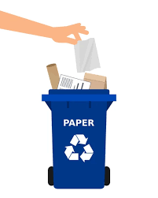
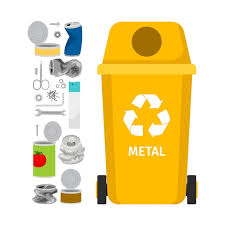
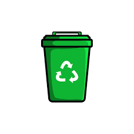
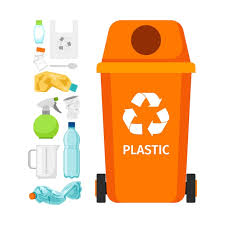
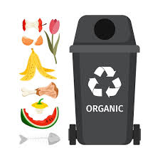
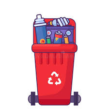

Formas de clasificar los residuos
El reciclaje azul se refiere al reciclaje
de papel y cartón. En el contenedor azul se depositan
materiales como periódicos, revistas, cajas de cartón,
papel de regalo, folletos, sobres, y cualquier otro
material hecho de papel o cartón.

El contenedor de reciclaje amarillo es para envases de
plástico, latas y briks. En este contenedor se deben depositar
botellas de plástico, latas de bebidas y conservas, envases de
comida tipo brik, y otros envases ligeros.

El color verde en el reciclaje, en muchos sistemas
, indica el contenedor destinado a los envases de vidrio.
Este contenedor suele ser de color verde y está diseñado
para la correcta disposición de botellas, frascos, tarros,
y otros recipientes de vidrio.

El reciclaje de color naranja, o "contenedor naranja"
, generalmente se utiliza para reciclar aceite usado de cocina.
Este tipo de aceite debe ser recogido en envases plásticos
bien cerrados y llevados a contenedores naranja específicos
o a puntos limpios. No debe ser vertido por el fregadero o el baño
, ya que puede causar atascos y contaminación.

El contenedor gris en el reciclaje, también conocido como
contenedor de "restos" o de "residuos no reciclables", es para
depositar aquellos desechos que no pueden ser reciclados ni
aprovechados de otra forma. Es el contenedor que se utiliza para
los residuos orgánicos que no pueden compostarse, así como para
otros residuos que no se pueden reciclar, como pañales, papel sucio,
bastoncillos, y productos de higiene personal.

El reciclaje de color rojo se refiere al contenedor que se utiliza
para depositar residuos peligrosos, como pilas, baterías, aceites,
medicamentos y residuos hospitalarios. Estos residuos requieren un manejo
especial para evitar que contaminen el medio ambiente.

ELABORADO POR ALEXANDER GARCIA GARCIA Y CARLOS ALBERTO SANCHEZ REYES DEL GRUPO:602,A 29 DE MAYO DEL 2025